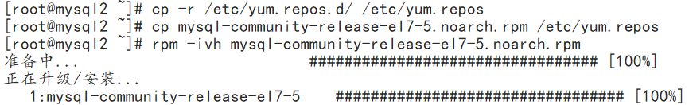
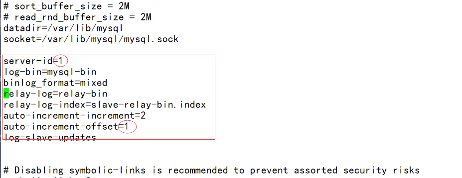
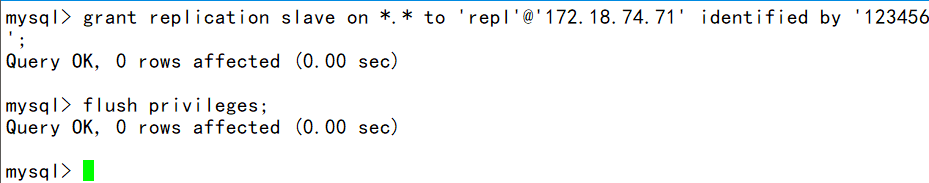
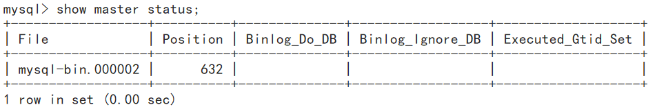
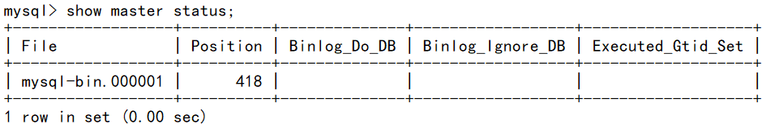
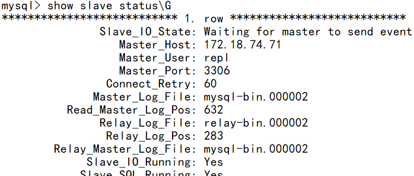
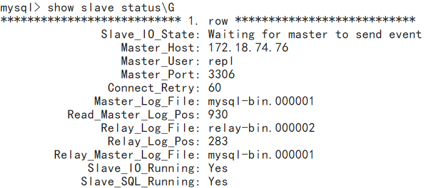

前言
本次搭建Mysql主主架构基于我的keepalived+nginx+apache+mysql实现高可用、负载均衡的网站/#more)这篇文章
在搭建主主配置之前我们先介绍介绍mysql主从方案
mysql主从方案,有一主多从，读写分离等功能，但是单主存在单点故障，从库切换成主库需要作改动等缺点。
因此，如果是双主或者多主，就会增加mysql入口，增加高可用。
不过多主需要考虑自增长ID问题，这个需要特别设置配置文件，比如双主，可以使用奇偶，总之，主之间设置自增长ID相互不冲突就能完美解决自增长ID冲突问题。
MySQL双主（主主）架构方案思路是:
两台mysql都可读写，互为主备，默认只使用一台（masterA）负责数据的写入，另一台（masterB）备用；
masterA是masterB的主库，masterB又是masterA的主库，它们互为主从；
两台主库之间做高可用,可以采用keepalived等方案（使用VIP对外提供服务）；
所有提供服务的从服务器与masterB进行主从同步（双主多从）;
建议采用高可用策略的时候，masterA或masterB均不因宕机恢复后而抢占VIP（非抢占模式）；
这样做可以在一定程度上保证主库的高可用,在一台主库down掉之后,可以在极短的时间内切换到另一台主库上（尽可能减少主库宕机对业务造成的影响），减少了主从同步给线上主库带来的压力；
但是也有几个不足的地方:
masterB可能会一直处于空闲状态（可以用它当从库，负责部分查询）；
主库后面提供服务的从库要等masterB先同步完了数据后才能去masterB上去同步数据，这样可能会造成一定程度的同步延时；
搭建环境
| 主机名称 | 安装软件 | ip地址 |
|---|---|---|
| mysql1 | mysql、mysql-server | 172.18.74.76 |
| mysql2 | mysql、mysql-server | 172.18.74.71 |
安装过程
wget http://repo.mysql.com/mysql-community-release-el7-5.noarch.rpm
mv http://repo.mysql.com/mysql-community-release-el7-5.noarch.rpm /etc/yum.repo/
rpm -ivh mysql-community-release-el7-5.noarch.rpm
yum install -y mysql&&yum install mysql-server -y
systemctl start mysql

首先我们配置mysql双主模型，让其数据同步
vim /etc.my.cnf
1 | server-id=1 |

其中红框历史需要添加的内容
粉框中是两个mysql不同的地方
mysql2的粉框处是2
然后重启mysql
systemctl restart mysql
auto-increment 两行的配置，使 masterA字段产生的数值是 奇数1，3，5，7 下面的masterB 产生的是 2，4，6，8 等，这样会避开双主 id 重复的问题
创建用户
grant replication slave on *.* to 'repl'@'172.18.74.71' identified by '123456'; ';
flush privileges;

web服务器授权
mysql> create database db_jd;
Query OK, 1 row affected (0.00 sec)
mysql> create user web@localhost identified by '123456';
Query OK, 0 rows affected (0.00 sec)
mysql> grant all privileges on *.* to web@localhost;
Query OK, 0 rows affected (0.00 sec)
mysql> create user web@172.18.74.66 identified by '123456';
Query OK, 0 rows affected (0.00 sec)
mysql> create user web@172.18.74.69 identified by '123456';
Query OK, 0 rows affected (0.00 sec)
mysql> GRANT ALL PRIVILEGES ON *.* TO 'web'@'%' IDENTIFIED BY '123456' WITH GRANT OPTTION;
--------------
GRANT ALL PRIVILEGES ON *.* TO 'web'@'%' IDENTIFIED BY '123456' WITH GRANT OPTION
--------------
Query OK, 0 rows affected (0.00 sec)
mysql> flush privileges;
Query OK, 0 rows affected (0.01 sec)
查看主库的状态


配置同步信息
masterA上：
change master to master_host='172.18.74.71',master_port=3306,master_user='repl',master_password='123456',master_log_file='mysql-bin.000002',master_log_pos=632;
start slave;
show slave status\G

masterB上：
change master to master_host='172.18.74.76',master_port=3306,master_user='repl',master_password='123456',master_log_file='mysql-bin.000002',master_log_pos=632;
start slave;
show slave status\G

测试主主同步
在masterA上创建一个数据库测试同步效果
mysql> create database myTest;
Query OK, 1 row affected (0.00 sec)
mysql> show databases;
+--------------------+
| Database |
+--------------------+
| information_schema |
| myTest |
| mysql |
| performance_schema |
+--------------------+
4 rows in set (0.00 sec)
到masterB查看是否已经同步创建数据库
mysql> show databases;
+--------------------+
| Database |
+--------------------+
| information_schema |
| myTest |
| mysql |
| performance_schema |
+--------------------+
4 rows in set (0.00 sec)
成功!